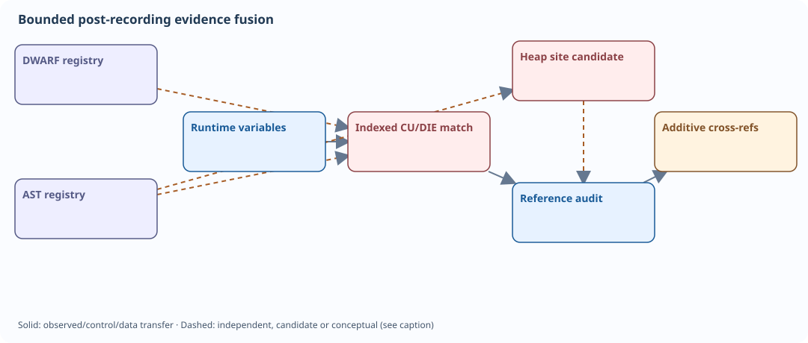

33 · Evidence fusion: bounded links between existing records #
Key terms #
| Term | Plain meaning |
|---|---|
| Correlation | Finding a carefully checked way to point from one provider's record to another provider's record. |
| Candidate | A plausible possible match that does not meet the requirements for an exact same-execution link. |
>
The big picture #
src/evidence/ reconciles optional GCC DWARF, optional Clang syntax and recorded GDB/heap evidence. It does not run GDB or clone registries per checkpoint; it adds optional references, never overwrites observed values, addresses, extents, activation IDs or allocation lifetimes (evidence/mod.rs:1-11). trace_program calls dwarf::associate after heap history/observations are assembled, then evidence::fuse(&mut trace) exactly once in the normal pipeline (trace.rs:944-969). The extraction contracts are detailed in DWARF and Clang AST.
mod.rs: orchestrator, state and accounting #
fuse(trace: &mut DebugSessionTrace) returns immediately if both static registries are absent; otherwise it derives a working directory from session metadata or process cwd, initializes EvidenceFusionSummary, and treats AST as available only if a TU is complete or partial (evidence/mod.rs:18-50). If Clang marked cross-provider semantics unavailable, it skips DWARF/AST member and expression links, runtime-source links and heap-call correlation, even if syntax remains retained. Otherwise it borrows the trace's DWARF registry and mutably borrows source metadata to build one transient DwarfIndex, link fields and expressions, then borrows metadata for the runtime bridge and mutably borrows it for heap-call correlation. It always audits existing optional refs, counts remaining links, and writes elapsed fusion/validation microseconds to both profiling and summary (evidence/mod.rs:51-91). count_links counts declaration, type, expression, member and candidate/ambiguity refs plus visited runtime variables across top frame, caller frames and globals; it does not claim each counted link proves a syntax node executed (evidence/mod.rs:93-152). The missing-provider test distinguishes absent summary, empty syntax registry, and one usable partial TU (tests/evidence_fusion.rs:137-178).
declarations.rs: CU-scoped type and member selection #
DwarfIndex::new(&TypeRegistry, &Path) borrows TypeEntrys and builds ID, canonical CU-file-to-unit, and (unit ID, kind/name) indexes. unit_file resolves a CU name against its compilation directory or cwd; artificial/empty names cannot be matched. unique_unit, unique_record and unique_member require one CU for the AST TU file, one complete named struct/union in that CU, then one member with the requested name (evidence/declarations.rs:13-86, evidence/declarations.rs:155-187). member_link(&self, file, parent_spelling, member_name) -> Option<(DwarfMemberRef, Option<&str>)> stores the parent type ID, index in the parent's serialized member vector, name and recorded byte offset; it returns the member's own type only if that type ID exists. unique_type is a separate fallback for one non-declaration-only named type in that same CU. spelling_key strips simple qualifiers and understands struct/union/enum tags but rejects pointers, arrays, function forms and multiword base spellings instead of parsing C types by guesswork (evidence/declarations.rs:88-130, evidence/declarations.rs:189-221). link_source_members(&mut SourceMetadataRegistry, &DwarfIndex) applies that resolution only to FieldDecls with a parent spelling, recording unique_parent_type_and_member_name and any valid member type (evidence/declarations.rs:132-153). Tests demonstrate struct Pair.x -> member index 0/offset 0, rejection of pointer spellings, and refusal to choose between two complete Pair records (evidence/declarations.rs:269-332). A member's byte offset is DWARF layout, not evidence of the active member of a union.
source_links.rs: expression and stopped-variable bridges #
link_expressions(&mut SourceMetadataRegistry, &DwarfIndex) first indexes AST unit files and declaration IDs. For each expression it clears previous cross-provider links, then follows an existing referenced_declaration to its correlated DWARF declaration/type and optional member. A MemberExpr without a member link may use its AST base type spelling and member name through member_link. If type remains unknown, sizeof(type) operand spelling, then plain expression type spelling, can resolve through unique_type within the TU's GCC CU; dwarf_type_evidence records whether the path was declaration, member, sizeof or unique name. This selection is static typing evidence, not runtime execution (evidence/source_links.rs:15-93). The real GCC/Clang integration test asserts valid type/member references and a JSON schema-2 roundtrip (tests/evidence_fusion.rs:270-353).
link_runtime(Option<&SourceMetadataRegistry>, &mut [ExecutionSnapshot]) -> usize builds a borrowed DWARF-declaration-ID -> optional AST-declaration-ID bridge. Two AST declarations claiming the same DIE replace the bridge value with None, never a first-match winner. It clears and attaches only VariableInfo.source_declaration_ref when the variable already has that exact serialized declaration_ref, visiting top-frame variables, caller frames and globals. It never uses a variable's address or a coincident source line as the runtime bridge (evidence/source_links.rs:95-144). The duplicate-claim test with activation IDs 7 and 8 shows the collision leaves both source refs unset; removing the duplicate links the first observation without changing either activation (tests/evidence_fusion.rs:469-535).
heap.rs: explicit delegation, not a second matcher #
correlate(registry: &mut SourceMetadataRegistry, events: &[HeapEvent], cwd: &Path) is the entire heap fusion module: it delegates directly to clang_ast::correlate_heap_calls (evidence/heap.rs:1-10). That callee indexes canonical source lines of direct and expanded allocator calls, requires resolved return-address-minus-one attribution and compatible event operation, and returns either a unique-direct candidate or explicit multiple/macro-only ambiguity. It never attaches an allocation ID to a syntax expression or identifies which same-line call executed (clang_ast.rs:947-1054, tests/evidence_fusion.rs:355-467). E.g., two free calls at one resolved line yield multiple_compatible_calls_on_resolved_line, not an exact event-expression link; macro-only free yields only_macro_expanded_calls_on_resolved_line (tests/evidence_fusion.rs:390-440).
validation.rs: construction-time reference audit #
audit(&mut Option<SourceMetadataRegistry>, Option<&TypeRegistry>, &mut [ExecutionSnapshot], &[HeapEvent]) -> usize builds borrowed sets/maps of existing DWARF declaration and type IDs, then clears dangling AST declaration/type refs and invalid DwarfMemberRefs. valid_member verifies that parent is a struct/union and that the indexed serialized member has the same name and byte offset; an invalid FieldDecl member also clears its field type, while a member-derived expression type/evidence is cleared with an invalid member. Expression type evidence is absent when its type is absent (evidence/validation.rs:15-107, evidence/validation.rs:183-197). The audit removes heap candidates with missing event/expression IDs, prunes ambiguity expression IDs and drops empty/out-of-range ambiguities. Finally it clears a runtime source_declaration_ref unless the source declaration still exists and its DWARF declaration equals the observed variable's declaration_ref, in top frame, caller frames and globals. The returned rejection count is recorded by fuse; this is an in-memory construction audit, not the import-time Trace Parser's deeper structural/relation validation (evidence/validation.rs:108-181, evidence/mod.rs:77-90, tests/evidence_fusion.rs:555-627). For example, a hand-edited trace whose existing expression ID points to the wrong declaration or whose valid call ID has an incompatible source line is caught by parser deep validation, not necessarily by this existence-focused construction audit (tests/evidence_fusion.rs:629-767, parser validation).
Partiality and invariants #
No DWARF or AST means no summary; DWARF-only can still produce a summary with ast_available=false. Missing/failed Clang or unverified GCC/Clang flags preserve source syntax or absence as appropriate, while cross-provider links are withheld (evidence/mod.rs:33-75, tests/clang_ast.rs:556-597). AST-on/off tests compare execution outcome, event shape and normalized runtime observations while allowing only additive metadata differences; that comparison checks preservation, not an independent proof of runtime truth (tests/evidence_fusion.rs:769-891). A unique compiler declaration is not a unique dynamic activation; a source initializer does not prove initialization; a source-line heap candidate is not the event's executed expression. See metadata overview and identity contracts.
Diagram notes #
Fusion inputs and audit #


Existing DWARF, AST and runtime records are matched conservatively; invalid references are removed before publication.